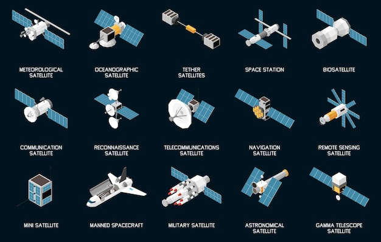

Section Aérospatial
Les différents types de satellites
Cette page contient: 13chapitres

Chapitre 1 : Introduction aux Différents Types de Satellites
Les satellites sont des objets en orbite autour de la Terre ou d'autres corps célestes. Ils sont classés en différents types en fonction de leurs fonctions et de leurs applications spécifiques.
Chapitre 2 : Satellites de Communication
Les satellites de communication sont utilisés pour transmettre des signaux de communication, tels que les communications téléphoniques, les données Internet, et les transmissions de télévision par satellite.
Chapitre 3 : Satellites d'Observation de la Terre
Les satellites d'observation de la Terre sont équipés de capteurs optiques ou radar pour surveiller et cartographier la surface de la Terre, fournissant des données pour l'agriculture, la surveillance environnementale, et la gestion des ressources naturelles.
Chapitre 4 : Satellites Météorologiques
Les satellites météorologiques recueillent des données sur les conditions atmosphériques de la Terre pour prévoir le temps, surveiller les tempêtes et les phénomènes météorologiques extrêmes, et étudier le climat à long terme.
Chapitre 5 : Satellites de Navigation (GPS)
Les satellites de navigation, comme ceux du système GPS, fournissent des informations de positionnement précises pour la navigation terrestre, maritime et aérienne, ainsi que pour des applications commerciales et militaires.
Chapitre 6 : Satellites Scientifiques
Les satellites scientifiques sont utilisés pour mener des recherches dans l'espace, étudier le Soleil, les planètes, les galaxies et les phénomènes astrophysiques, fournissant des données cruciales pour la recherche astronomique.
Chapitre 7 : Satellites de Défense et de Sécurité
Les satellites de défense et de sécurité sont utilisés pour la surveillance militaire, la reconnaissance, la communication sécurisée et la collecte de renseignements stratégiques.
Chapitre 8 : Satellites d'Exploration Spatiale
Les satellites d'exploration spatiale sont envoyés vers d'autres planètes, lunes ou astéroïdes pour étudier leur composition, leur atmosphère et leur géologie, contribuant à notre compréhension du système solaire.
Chapitre 9 : Satellites de Télécommunications
Les satellites de télécommunications sont dédiés à la transmission de signaux de télécommunications, facilitant les communications internationales, les connexions Internet et les réseaux de télévision par satellite.
Chapitre 10 : Satellites d'Exploration et d'Observation Spatiale
Les satellites d'exploration et d'observation spatiale sont utilisés pour explorer le système solaire et étudier les objets célestes au-delà de la Terre, fournissant des informations cruciales pour la recherche astronomique et astrophysique.
Chapitre 11 : Satellites de Télévision
Les satellites de télévision transmettent des signaux de télévision par satellite pour les services de diffusion directe aux foyers à travers le monde, offrant une couverture mondiale pour les chaînes de télévision et les fournisseurs de contenu.
Chapitre 12 : Satellites de Reconnaissance
Les satellites de reconnaissance sont utilisés pour la surveillance de la Terre à des fins militaires, civiles et scientifiques, capturant des images haute résolution et des données stratégiques pour l'analyse et la prise de décision.
Chapitre 13 : Satellites de Surveillance et de Gestion des Catastrophes
Les satellites de surveillance et de gestion des catastrophes fournissent des données en temps réel pour la prévention des catastrophes naturelles, la gestion des crises et les opérations de secours, facilitant une réponse rapide et efficace lors d'événements catastrophiques.
Conclusion : L'Importance des Satellites dans notre Monde Moderne
En conclusion, les différents types de satellites jouent un rôle crucial dans notre société moderne, en facilitant les communications mondiales, la surveillance environnementale, la navigation précise, les prévisions météorologiques, la recherche scientifique et bien plus encore. Leur utilisation diversifiée et leur évolution technologique continuent de façonner notre compréhension du monde et de l'univers.